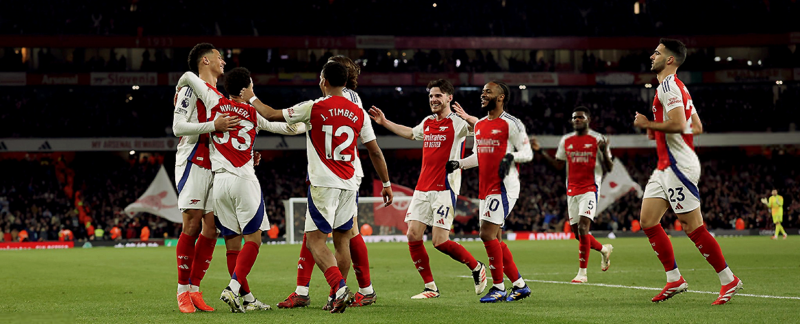
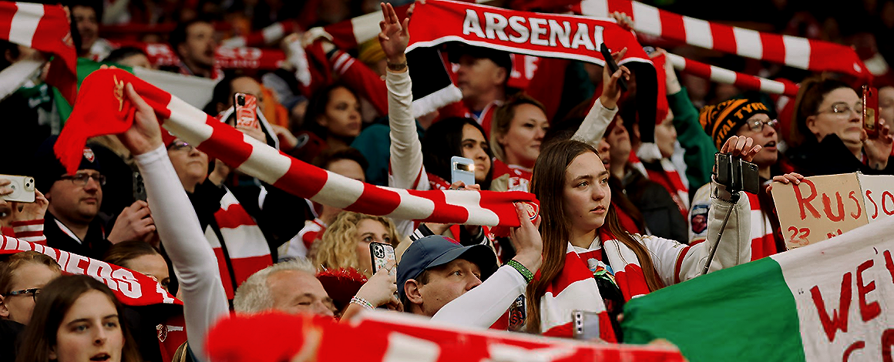
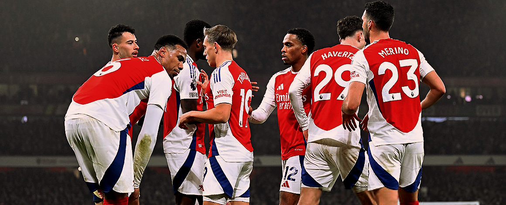

Hello, my name is Anna and i’m brazilian girl.
I’m big supporter since 2009, and i choose to make this website for them as my dev web project.
Right here, will have the lastest photos from portraits, trainings, games and appearances from
Arsenal players or staff.
All copyrights from every photo reserved for photographers.